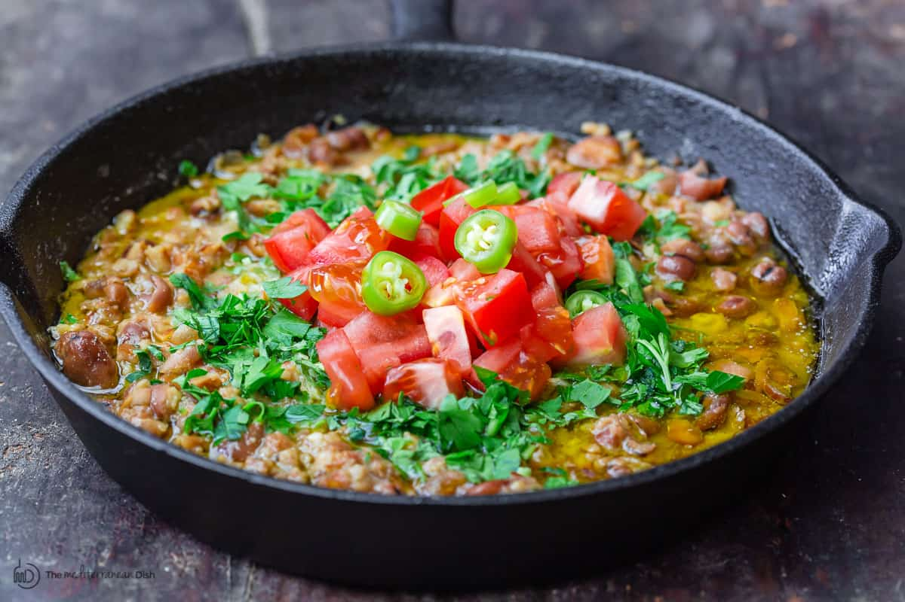

Foul Mudammas (Egyptian Fava Beans) Recipe

Description
Ingredients
- 2 cans plain fava beans, 13 to 15 ounces each can (see notes if using dry fava beans)
- ½ cup water
- Kosher salt
- ½ to 1 teaspoon ground cumin
- 1 to 2 hot peppers, chopped (jalapenos will work here)
- 2 garlic cloves, chopped
- 1 large lemon, juice of
- Extra virgin olive oil, Early Harvest
- 1 cup chopped parsley
- 1 tomato, diced
Steps
- In a cast iron skillet or saucepan, add the fava beans and ½ cup water. Warm over medium-high heat. Season with kosher salt and cumin. Use a potato masher or fork to mash the fava beans.
- In a morter and pestle, add the hot peppers and garlic. Smash. Add in juice of one lemon and stir to combine.
- Pour the garlic and hot pepper sauce over the fava beans. Add a generous drizzle of extra virgin olive oil. Top with chopped parsley, diced tomatoes, and a few slices of hot peppers, if you like.
- Serve with pita bread, sliced veggies and olives.